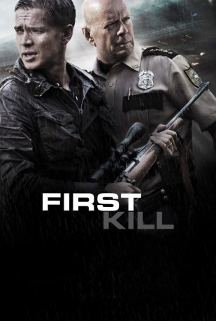
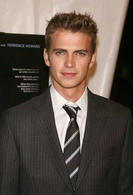
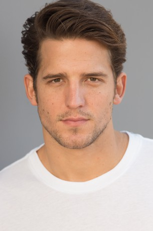

#8404 First Kill
 
 IMDB-Wertung: 4.9 / 10
IMDB-Wertung: 4.9 / 10  Tomatometer: 13
Tomatometer: 13  Metascore: 39
Metascore: 39 
Der junge Vater und erfolgreiche Wall Street Broker Will (Hayden Christensen) versucht, mehr Zeit mit seinem Sohn Danny (Ty Shelton) zu verbringen und nimmt seine Familie mit auf einen Trip in die Wildniss. Sie verbingen die Zeit in einer abgelegenen Hütte, in der Will aufwuchs. Als Will und Danny zusammnen jagen gehen wollen, werden sie plötzlich Zeuge eines schockierenden Schusswechsels; das Opfer der Attacke ist verwundet, scheint aber am Leben zu sein. Die beiden nehmen den Verletzten mit zu ihrer Hütte und leisten erste Hilfe - eine Tat, die sie bald schon bereuen werden: Der Fremde nimmt Danny als Geisel. Will muss sich mit dem lokalen Polizeichef (Bruce Willis) zusammnentun, um den Entführer zu stellen.
Jahr: 2017
Dauer: 101 Minuten
FSK: 16
Land: Kanada Studio: Cinemex Films S.A. de C.V.Tonspuren: DTS - ,
Untertitel:
Auflösung: 1080p (1920x800) Größe: 6154 MB
Genre: Action, Thriller, Krimi
Regisseur: Steven C. Miller
Drehbuch: Nick Gordon
Soundtrack: Ryan Franks, Scott Nickoley
Darsteller:
 Bruce Willis als Howell
Bruce Willis als Howell-  Hayden Christensen als Will
- Ty Shelton als Danny
- Megan Leonard als Laura
- Gethin Anthony als Levi
 William DeMeo als Richie
William DeMeo als Richie Tyler Jon Olson als Tom Davies
Tyler Jon Olson als Tom Davies-  Shea Buckner als Charlie
- Magi Avila als Adele
 Christine Dye als Mabel
Christine Dye als Mabel- Heather Johansen als Nurse Kylie
- Chris Moss als Police Dispatcher
- Javier Sepulveda als Station Officer
 Jesse Pruett als Officer Lewis
Jesse Pruett als Officer Lewis- Chelsea Mee als Tammy
- Charlotte Kirk als News Anchor
 Robert Harvey als Officer Bob Harvey
Robert Harvey als Officer Bob Harvey- Tamara Belous als Waitress
- Jim Gloyd als Nurse (uncredited)
- Adam Hicks als Swat Officer (uncredited)
- Bret Aaron Knower als Atlas Trader (uncredited)
- Matt Ridley als Stock Trader (uncredited)
- Ming Wang als Atlas Trader / Employee (uncredited)
- Deb G. Girdler als Dottie
- Martin Blencowe als Forensics Officer
- John Dauer als Forensics Officer 2
- Charlie Roetting als Officer Sawyer
- Alanna Tremblay als Head Nurse Laverne
- John E. Brownlee als Police Officer (uncredited)
- Richard Doone als Hospital Patient (uncredited)
- Donnie Dunn als Atlas Trader (uncredited)
- David Pittinger als News Reporter (uncredited)
- Brad Sherman als Atlas Trader / Employee (uncredited)
Datei: X:\2017(A-F)\First Kill (2017, FSK16, 1920x800).mkv seit 01.03.2018
Festplatte: HD 2017(A-Z)-2018(A-F)
 Es gibt insgesamt 152 Filme in der Gruppe '2017(A-F)'
Es gibt insgesamt 152 Filme in der Gruppe '2017(A-F)'